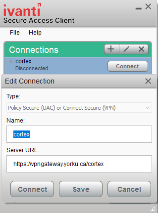
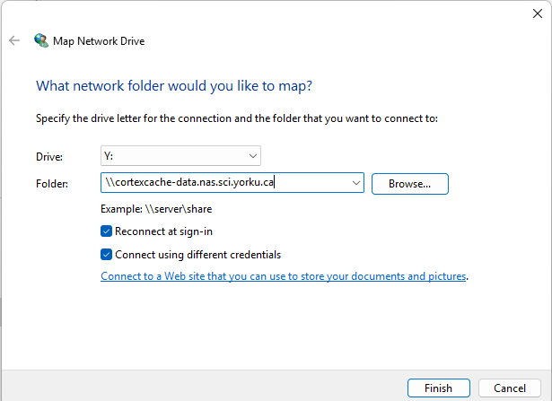

CortexCache access guide
CortexCache is the shared storage for the Michaels, Ma and Schall labs. Start here if you’re connecting for the first time.
1Request access
You need a Passport York account with Duo, plus permission to reach the server and open your lab’s files.
- Ask York UIT for VPN access. Email askit@yorku.ca and request the CortexCache (
cortex) VPN profile. Include your Passport York username, lab and supervisor. - Ask Jonathan for file access. Email jmichae@yorku.ca with your Passport York username, lab, supervisor, and the project folders you needthe lab share you need.
Wait for confirmation before signing in. VPN permission and file permission are separate. Never email your password.
Access requirements and lab computer registration
Existing access and registered lab computers
If both permissions are already confirmed, go to step 2. If your lab manager confirms that this wired computer has direct CortexCache access, skip the VPN and go to step 3. You still need permission to open the files.
UIT arranges VPN approval through your Faculty’s Executive Officer. Allow a few days for a new request.
2Connect to the cortex VPN
Use the VPN on your laptop, at home, or on campus unless your lab manager has confirmed direct access for this computer.
- Install Ivanti Secure Access from York’s VPN download page. Choose your operating system.
- Open Ivanti and add a connection named cortex. Use this server URL:
https://vpngateway.yorku.ca/cortex - Click Connect. Enter your Passport York username without @yorku.ca and your password. Leave Save settings unticked, then approve the Duo request.
Wait until Ivanti says Connected, and leave it connected while using your files. The server URL must end in /cortex.
Detailed VPN setup and sign-in support
VPN setup screenshot

3Connect to your lab share
Your share is Michaels-Projects. Inside, open your project folder. Only folders you have access to appear. Keep raw data and shared analyses in the appropriate project folder.
Your share is Ma-Group. It opens your existing user folder automatically. Use the address below as shown; don’t add your username to it.
- Open File Explorer → This PC → Map network drive (it may be under the … menu). Choose a drive letter.
- Paste this into Folder:
Tick Reconnect at sign-in and Connect using different credentials, then click Finish.
\\cortexcache-data.nas.sci.yorku.ca\Michaels-Projects - Sign in as
yorku.yorku.ca\your_username, replacingyour_usernamewith your Passport York username. Use your Passport York password.
Windows setup screenshot

- In Finder, choose Go → Connect to Server (⌘K).
- Paste this address and click Connect:
smb://cortexcache-data.nas.sci.yorku.ca/Michaels-Projects - Choose Registered User. Sign in as
yorku.yorku.ca\your_usernamewith your Passport York password.
Find the share in Finder’s sidebar under Locations.
On Ubuntu Desktop, use our installer to add a shortcut and VLC support for videos stored on the server.
Download Ubuntu setup- Extract the ZIP. Open the extracted folder, right-click its background and choose Open in Terminal.
- Run:
The installer needs internet and your Ubuntu administrator password. It installs VLC and sets it as the default for common video formats.
bash install.sh - Open Michaels-Projects from Applications or your desktop. Enter your York username; the domain is supplied for you. Files will ask for your York password if needed.
If a desktop shortcut is blocked, right-click it and choose Allow Launching. If videos won’t open after installation, log out and back in once.
Connect using Files instead
- Open Files → Other Locations → Connect to Server.
- Enter:
smb://cortexcache-data.nas.sci.yorku.ca/Michaels-Projects - Choose Registered User, enter your Passport York username and password, and set Domain to
YORKU.
On Ubuntu, missing SMB support can be installed with sudo apt install gvfs-backends gvfs-fuse. Log out and back in after installing.
Reconnecting, disconnecting and command-line mounting
Next time: connect the VPN if needed, then reopen the share. Request additional file access from Jonathan.
Troubleshooting
The server won’t open
Check that Ivanti says Connected to cortex, not a different York profile. Check the address against step 3 and retry. For VPN problems, contact York UIT.
It keeps asking for my password, or says “Access denied”
Check your username format in step 3. If your York password works elsewhere but the server still refuses it, stop retrying and email Jonathan. Include your username, lab, share name, exact error and a screenshot. Never include your password.
I’m connected, but files or folders are missing
Email Jonathan with your York username and the project folder you need. Being connected does not give you access to every project.
Ma and Schall use per-user storage. If expected files are missing, email Jonathan with your York username and the folder you expected to find.
Videos won’t play on Ubuntu
For Michaels users, run the Ubuntu setup in step 3, then log out and back in. It lets VLC use the authenticated server connection. Keep the VPN connected while playing videos.
Reference and support
Connection addresses · Error-specific troubleshooting · Large transfers and file management